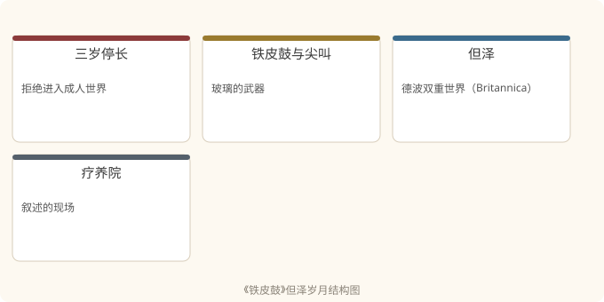

铁皮鼓
一、基本信息
| 作者 | 君特·格拉斯 |
|---|---|
| 成书/出版 | 1959年出版（Britannica：1959） Gunter Grass — Encyclopaedia Britannica（百科全书） |
| 国别/地区 | 德国 |
| 时代 | 现当代 · 20世纪 |
| 体裁 | 长篇小说 |
| 语言 | 德语 |

《铁皮鼓》但泽岁月结构图（主题·结构图）
二、创作背景
Britannica：'This exuberant picaresque novel, written in a variety of styles, imaginatively distorts and exaggerates his personal experiences'（多风格的狂想流浪汉小说，对个人经历作想象性的扭曲与夸大）。
但泽三部曲之首：后接《猫与鼠》（1961）与《狗年月》（1963）（Britannica）。
三、内容脉络
奥斯卡·马策拉特——'a dwarf who narrates from an asylum'（精神病院里 narrate 的侏儒——Britannica）；三岁生日自决停止生长，以铁皮鼓与尖叫记录但泽的纳粹化年代（通说+Britannica 语境：the creeping Nazification of average families）。
波兰走廊/但泽的多语环境：'the Polish-German dualism of Danzig……the attrition of the war years'（Britannica）。
结局：奥斯卡被控杀人进疗养院，以叙述自我清算（通说待核）。
四、主要人物表
| 人物 | 身份 | 说明 |
|---|---|---|
| 奥斯卡·马策拉特 | 侏儒·叙述者 | 鼓与碎玻璃嗓（Britannica+通说） |
| 阿格内斯 | 母亲 | 两个父亲的故事（通说待核） |
| 布朗斯基 | 表舅 | 波兰认同（通说待核） |
五、主题与艺术特点
- 小丑的见证：拒绝长大的拒绝服从（通说）。
- 日常家庭的纳粹化（Britannica）。
- 多风格拼贴：童话/歌德式/编年史（Britannica：variety of styles）。
六、影响与评论
- Britannica：格拉斯成为'在纳粹之下成年的一代德国人的文学声音'（语境）；1999年诺奖。
Gunter Grass — Encyclopaedia Britannica（百科全书） - 1979年施隆多夫电影版获戛纳金棕榈（与《现代启示录》并列）与奥斯卡最佳外语片（Britannica）。
Gunter Grass — Encyclopaedia Britannica（百科全书）
七、阅读建议
难点
- 奥斯卡的第一人称三视角（我/他/奥斯卡——通说待核）。
- 但泽德语-波兰语-卡舒比语地名。
- 胡其鼎译本（漓江出版社/上海译文，通说待核）。
- 德文原版（Steidl，通说待核）。
对照《猫与鼠》《狗年月》补全但泽世界。
八、待核实
- 三视角（第一/第二/第三视角章法）核对。
- 《剥洋葱》2006年党卫军争议与本书的关系待核。
- 奥斯卡身高三英尺与'九岁'心智设定核对。
本页主要来源
君特·格拉斯的其他收录作品：铁皮鼓